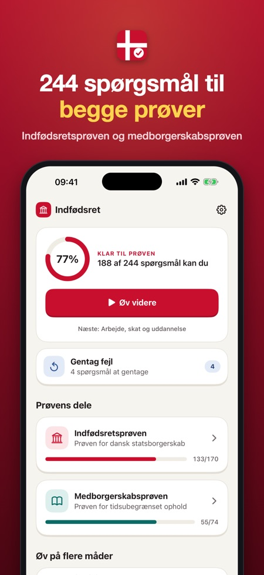
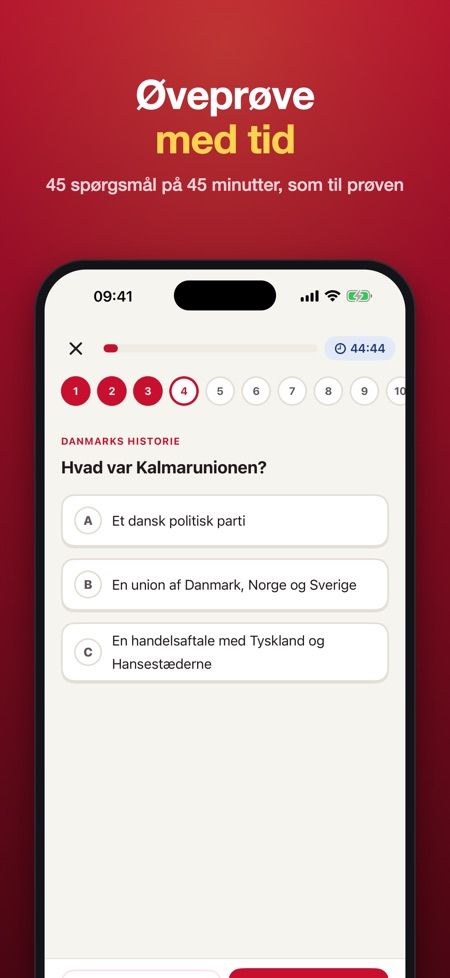
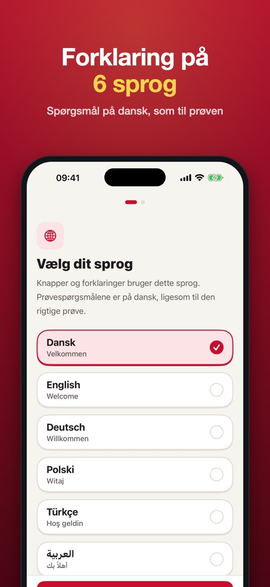

Appen forbereder dig til indfødsretsprøven og medborgerskabsprøven med 244 spørgsmål. Efter hvert svar kan du læse forklaringen på dansk, engelsk, tysk, polsk, tyrkisk eller arabisk.



Indfødsretsprøven 2026/2027 er en uafhængig iPhone- og iPad-app fra Baytech BV til at øve indfødsretsprøven og medborgerskabsprøven. Den har 244 spørgsmål (148 plus 22 værdispørgsmål til indfødsretsprøven, 74 til medborgerskabsprøven), øveprøver med tid i samme format som de rigtige prøver og forklaringer på dansk, engelsk, tysk, polsk, tyrkisk og arabisk. Den virker uden internet, og alt låses op med ét køb på 129 kr uden abonnement.
| Spørgsmål | Sprog | Uden internet | Pris | |
|---|---|---|---|---|
| Denne app | 244 | Dansk; forklaring på 6 sprog | Ja | 129 kr, ét køb |
| SIRI: læremateriale og tidligere prøver (danskogproever.dk) | Tidligere prøver + læremateriale | Dansk, også som lyd | PDF kan hentes | 0 kr |
| Bliv Klar | 1.700+ | Dansk og engelsk | Ja | 149 kr, ét køb |
| Nyborger | Ikke oplyst | Kun dansk | Ikke oplyst | Abonnement 149 kr/md., 499 kr/år |
| Indfødsretsprøven ◎ | 369 | Dansk og engelsk | Ikke oplyst | 79 kr, ét køb |
Kilde: appbeskrivelser og priser i den danske App Store, tjekket 2. november 2026. Brug altid også SIRI's officielle materiale; ingen app er officiel.
Prøv en øveprøve i browseren →
Appen dækker begge. Indfødsretsprøven har 148 spørgsmål om bl.a. historie, grundlov og samfund samt 22 om danske værdier, medborgerskabsprøven har 74 om hverdagsliv, rettigheder og pligter samt arbejde, skat og uddannelse.
Indfødsretsprøven øves med 45 spørgsmål på 45 minutter, bestået ved 36 rigtige og mindst 4 af 5 værdispørgsmål. Medborgerskabsprøven øves med 25 spørgsmål på 30 minutter, bestået ved 20 rigtige.
Nej, 5 af spørgsmålene til indfødsretsprøven handler om aktuelle begivenheder og kan ikke forberedes. Øveprøven bruger i stedet spørgsmål fra pensum, og den rigtige prøve kan være anderledes.
Ja, forklaringerne findes på dansk, engelsk, tysk, polsk, tyrkisk og arabisk.
Du kan prøve ét emne og én øveprøve i hver prøve uden køb. Du låser alt op med ét køb, og der er intet abonnement.
Ja, appen virker uden internet, uden reklamer og uden konto.
Nej, den er uafhængig og ikke tilknyttet SIRI, Uddannelses- og Forskningsministeriet eller staten.
Forbered dig til indfødsretsprøven og medborgerskabsprøven med 244 spørgsmål og forklaring på 6 sprog. Betal én gang, intet abonnement.
HVAD ER MED
• Indfødsretsprøven: 148 spørgsmål om Danmarks historie, grundlov og demokrati, velfærd og samfund, kultur og traditioner, geografi og Danmark i verden
• Indfødsretsprøven: 22 spørgsmål om danske værdier
• Medborgerskabsprøven: 74 spørgsmål om hverdagsliv, demokrati, rettigheder og pligter samt arbejde, skat og uddannelse
• Øveprøver med tid i samme format som de rigtige prøver: 45 spørgsmål på 45 minutter (bestået ved 36 rigtige og mindst 4 af 5 værdispørgsmål) og 25 spørgsmål på 30 minutter (bestået ved 20 rigtige)
• Dine fejl kommer igen, til du har svaret rigtigt 2 gange i træk
• Efter øveprøven til indfødsretsprøven ser du, om du ligger over den sikre grænse på 36 af 40 (de 5 aktuelle spørgsmål kan ikke øves)
• Få spørgsmål og svarmuligheder læst højt på dansk
• Du kan se, hvor langt du er i hvert emne
• Nedtælling til din prøvedato og en daglig påmindelse, hvis du vil
FORKLARING PÅ DIT SPROG
Spørgsmålene er på dansk, ligesom til prøven. Efter hvert svar kan du læse forklaringen på dansk, engelsk, tysk, polsk, tyrkisk eller arabisk.
FAIR PRIS
Prøv ét emne og én øveprøve i hver prøve uden køb. Lås op for alt med ét køb. Intet abonnement, ingen reklamer, ingen konto. Appen virker uden internet.
Bemærk: 5 af spørgsmålene til indfødsretsprøven handler om aktuelle begivenheder og kan ikke forberedes. Appens øveprøve bruger i stedet spørgsmål fra pensum.
Appen er uafhængig og ikke tilknyttet SIRI, Uddannelses- og Forskningsministeriet eller staten. Alle spørgsmål er skrevet af os ud fra prøvernes offentlige emner. Øveprøven er træning; den rigtige prøve kan være anderledes.